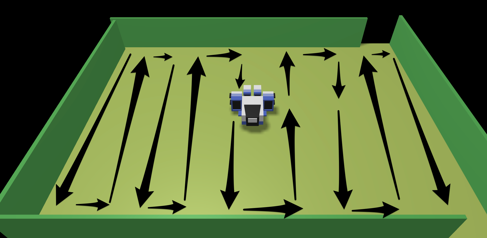
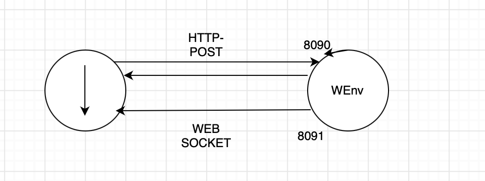
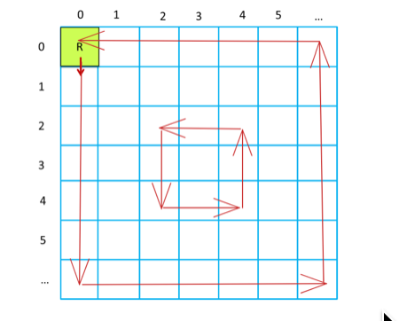

LABORATORIO DI INGEGNERIA DEI SISTEMI SOFTWARE
Introduction
Requirements
Requirement analysis
User Story
Come utente, posiziono il robot nella cella HOME. In seguito, avvio l'applicazione robotCleaner che muove il robot per tutta la superficie della stanza. L'applicazione non può essere interotta dall'utente, ma il sistema deve terminare in modo autonomo una volta finito il suo compito.
Al termine dell'applicazione mi aspetto che il percorso effettutato dal robot sia quello mostrato in figura.

Verifica dei risultati
Problem analysis
Aspetti Rilevanti
Si evidenzia che:
- In VirtualRobot2021.html: commands il cliente
afferma che il robot può ricevere comandi in due modi diversi:
- Inviando messaggi alla porta 8090 utilizzando HTTP POST
- Inviando messaggi alla porta 8091 utilizzando websocket
-
Il tutto consiste nel realizzare un sistema distribuito composto da due macro-componenti software:
- il VirtualRobot, fornito dal cliente
- L' applicazione robotCleaner che interagisce con il robot
Architettura Logica

Test plans
Per verificare che l'applicazione soddisfa i requisiti, si potrebbe tener traccia delle mosse effettutate dal robot, e nello specifico delle posizioni già coperte dal robot. Supponiamo dunque, che la stanza sia suddivisa in celle di dimensione del robot e che questo si muova di un unità-robot.
Partendo dalla cella HOME il robot si muove a onde per coprire l'intera superificie della stanza, come mostrato in figura.

Project
Testing
Deployment
Maintenance
By Alessio Reitano email: alessio.reitano@studio.unibo.it